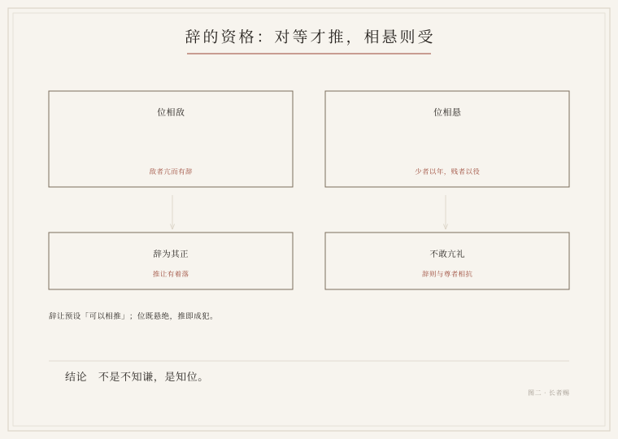

曲礼上 · 一·七十七 · 第 75 课
凡受赐皆有辞让之礼；唯少者与贱者受尊长之赐不辞。此节定出一个界限：辞是敌者之礼，不是卑者之礼。
说什么事：长者赐，少者、贱者不敢辞。
落在哪一层：仪，兼及分。辞与不辞，系于位。
为何编在此位：上节讲侍饮之让，此节推广到凡赐。饮是一事，赐是一类。
【经】長者賜，少者、賤者不敢辭。
【注】不敢亢禮也。賤者，僮僕之屬。
少者 疏「少谓幼稚」。以年论，不以位论。
贱者 注「僮仆之属」；疏「贱谓僮仆之属也」。以役论。
不敢辞 非不欲辞，是不敢辞。辞让本是对等之礼，施于尊长则成抗礼。
亢礼 亢，抗也。注「不敢亢礼也」——辞则与尊者相抗。
敌者亢而有辞 疏语。位相敌，则辞为其正；位相悬，则辞为失。
长者有所赐，年少者与卑微者不敢辞让，直受而已。
一节讲「辞」的资格。辞让看起来是谦，其实是对等者之间的礼；对尊长而辞，是以对等自处。所以少者贱者不辞——不是不知谦，是知位。
第一层 辞是对等之礼 疏「敌者亢而有辞」。辞让预设了双方可以相推；位既悬绝，推让就变成冒犯。
第二层 以年与以役 少者以年，贱者以役。两条路径都通向同一个结论：受赐者不在可与尊者相推之位。
第三层 不敢二字 注「不敢亢礼」。不敢，是自知其位，不是自贬其价。
第四层 受即是敬 尊者之赐，辞则拂其意。直受而致谢，是把赐者的意接住。
与今日何干 长辈给晚辈红包，晚辈推来推去，往往推成了尴尬。此节说：该受就受，受完再谢。辞让要用在对等的人身上。
| 左 | 右 |
|---|---|
| 长者赐 | 尊长有所与 |
| 少者贱者 | 以年、以役，皆不在相推之位 |
| 不敢辞 | 辞则成抗礼 |
| 亢礼 | 与尊者相抗 |
| 敌者 | 位相敌，辞为其正 |
| 受即是敬 | 拂其意不如接其意 |
画两只手之间的传递：一只年长的手自上递出一只素色包裹，另一只较低的手已伸平承接、掌心向上，两手之间没有推回的势头。背景为一段席边与地面。不画人面、不写文字。赭色只在包裹的系绳上。
